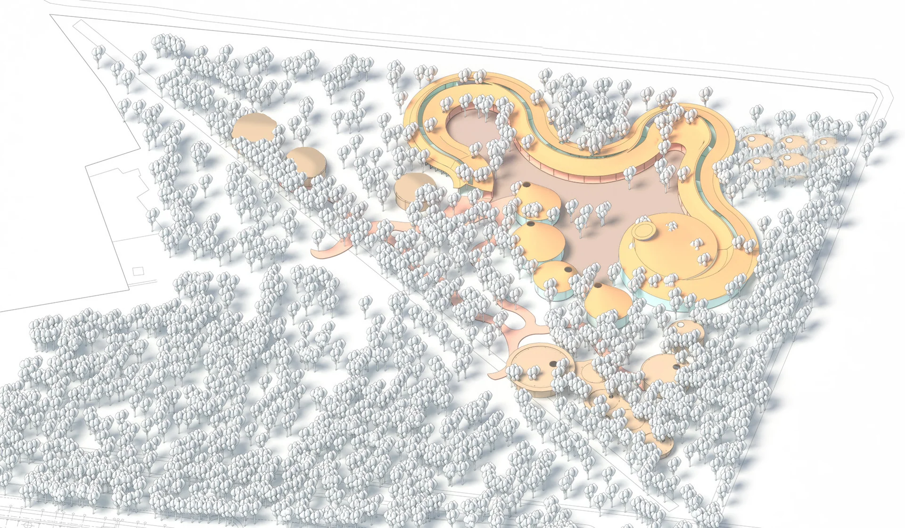

ARCHITECTURE · LANDSCAPE · PLACE
Spaces that move us.
Thinking across scales. Designing with place.
We believe that great places are not just built, they are felt. Our work brings together architecture, landscape and culture to create meaningful experiences — from the intimate to the iconic, from a single space to a larger territory.
Our approachSelected works / 2021—2026


In dialogue with the landscape.
We see landscape as a living system — a cultural, ecological and social framework that shapes how we design, build and belong.

A practice shaped by curiosity.
OLA MAGADY is an architecture and landscape studio based in Saudi Arabia, working on projects that respond to place, people and culture. We combine research, design and collaboration to create enduring environments.
About the studioOur process
01
Listen
We start with people, place and context.
02
Explore
We research, analyze and ask better questions.
03
Shape
We turn insight into concept and design.
04
Deliver
We bring ideas to life with care and precision.
Selected publications & recognition
-
2025
ArchDaily — Sitra Cultural & Experience Centre
Featured Project
-
2024
Dezeen — Pallial Care & Wellbeing
Longlist
-
2023
World Architecture Festival
Finalist — Health Category
“A thoughtful and poetic approach to landscape and architecture.”
— World Architecture Festival, 2023
Get in touch
Let's start a conversation.
We'd love to hear about your project, idea, or opportunity to collaborate.
Discuss a project